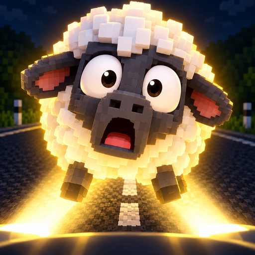

Mäh Rush
Crossy Road – nur andersrum! Die Schafe laufen von allein über die Straße, und du schickst den Verkehr los. Kombos, Power-ups, vier Karten, Schneesturm und Nachtfahrten.
Im Play Store ansehenKleine, freche Spiele für zwischendurch.

Crossy Road – nur andersrum! Die Schafe laufen von allein über die Straße, und du schickst den Verkehr los. Kombos, Power-ups, vier Karten, Schneesturm und Nachtfahrten.
Im Play Store ansehenWeitere Spiele folgen …